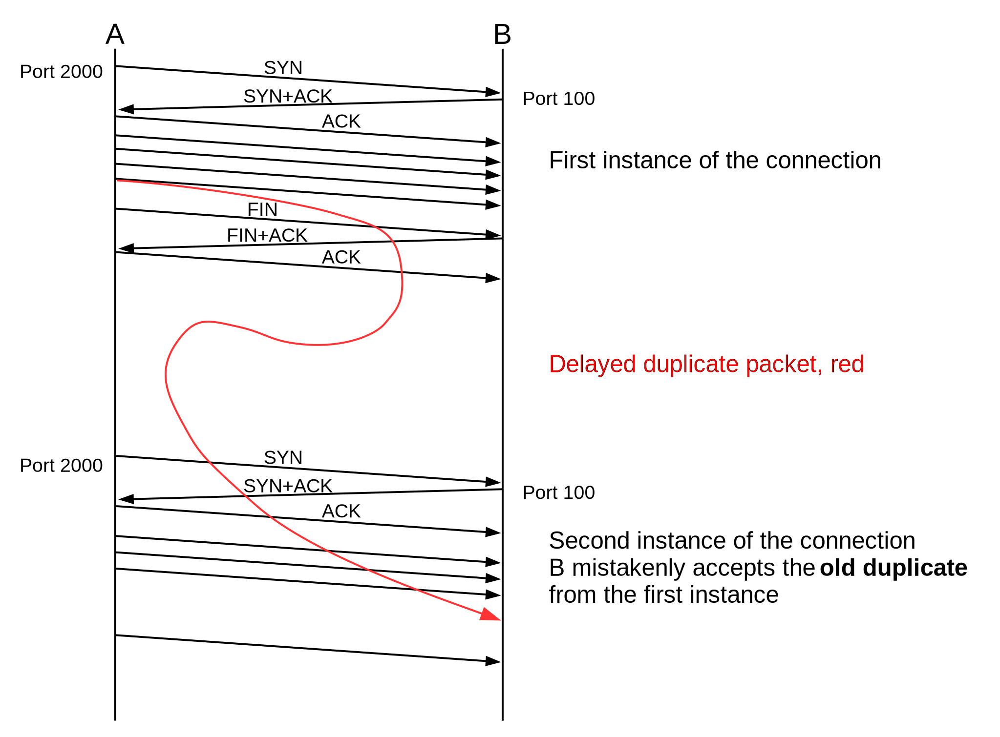

You must have heard of TCP somewhere or the other is you have been engaged with API development and have basic knowledge as to how the code you write works on the web. But the deeper knowledge is how the data for request and the response is transferred across servers. Well Transmission Control Protocol a.k.a. TCP comes to rescue. For those well versed with OSI model, it is a protocol for Transport Layer. Nearly every Internet-connected device “talks” TCP and the whole Internet relies on it.
TCP Connection States
The most common states are : LISTEN, CLOSED and ESTABLISHED. Most of the developers don’t know and also don't need to know more about TCP states, because this is what any application really cares about. However, a lot of stuff happens behind the scenes in the lifecycle of a TCP connection.
In case you want to view all the tcp connections on your system, you can use netstat or ss as :
$ netstat -t
Active Internet connections (w/o servers)
Proto Recv-Q Send-Q Local Address Foreign Address State
tcp 0 0 localhost:49667 localhost:afs3-kaserver ESTABLISHED
tcp 0 0 ip-10-0:afs3-fileserver ip-10-0-7-233.ap-:39441 ESTABLISHED
tcp 0 0 ip-10-0:afs3-fileserver ip-10-0-1-185.ap-:54707 ESTABLISHED
tcp 0 0 ip-10-0:afs3-fileserver ip-10-0-1-25.ap-s:33442 ESTABLISHED
tcp 0 0 ip-10-0:afs3-fileserver ip-10-0-1-78.ap-s:27302 ESTABLISHED
tcp 0 0 ip-10-0:afs3-fileserver ip-10-0-7-143.ap-s:7890 ESTABLISHED
tcp 0 0 ip-10-0-7-244.ap-:33510 ip-10-0-2-189.ap-:27017 ESTABLISHED
tcp 0 0 ip-10-0:afs3-fileserver ip-10-0-1-185.ap-:54739 ESTABLISHED
tcp 0 0 ip-10-0:afs3-fileserver ip-10-0-7-143.ap-s:7892 ESTABLISHED
tcp 0 0 ip-10-0:afs3-fileserver ip-10-0-1-78.ap-s:27118 ESTABLISHED
tcp 0 0 ip-10-0-7-244.ap-:32902 collector-4.newre:https TIME_WAIT
tcp 0 0 ip-10-0-7-244.ap-:57817 collector-2.newre:https TIME_WAIT
tcp 0 0 localhost:40494 localhost:afs3-vlserver ESTABLISHED
tcp 0 0 localhost:50019 localhost:afs3-kaserver ESTABLISHED
tcp 0 0 ip-10-0:afs3-fileserver ip-10-0-1-78.ap-s:27304 TIME_WAIT
...
$ss -t
State Recv-Q Send-Q Local Address:Port Peer Address:Port
ESTAB 0 0 127.0.0.1:49667 127.0.0.1:afs3-kaserver
ESTAB 0 0 10.0.7.244:afs3-fileserver 10.0.7.233:41267
ESTAB 0 0 10.0.7.244:afs3-fileserver 10.0.7.233:39441
...
Connection Initiation
Connection initiation is a three-way handshake. Let's say that the party which initiates the connection is the client and the one that accepts the connection is the server.
- Prerequisite : A server with a listener. The listener will listen on incoming connections on a specific port. This state is represented as
LISTEN. - The client sends a
SYNpacket to the server and changes it's own state toSYN-SENT. - The server will then acknowledge the
SYNand send aSYN-ACKin response to the client. - The client on receipt of
SYN-ACKchanges its connection state toSYN-RECEIVED. - If everything worked properly, the client will reply with an acknowledgement
ACKand then the connection is marked asESTABLISHEDon both end-points.
Data Transfer
Now the data transfer can happen between client and the server. Each party sends some data in packets and the other party responds with acknowledgement ACK for the data packet received.
Connection Termination
Either of client or server can terminate the connection if they are finished with the data exchange or timeout happens or variety of other reasons. However, it can not be dropped because their other end-point needs to know about the termination. Terminating a connection is a four-way handshake. And because each end-point is terminating the connection independently. It doesn’t matter which end-point starts the termination, because both of them will change their states accordingly with the information being sent to the other party about termination. Let's assume the client starts the termination.
- The client sends a
FINpacket to the server and changes its state toFIN-WAIT-1. - The server receives the termination request from the client and responds with an acknowledgement
ACK. - After sending the response, the server will change its state to
CLOSE-WAITstate. - As soon as the client receives this acknowledgement from the server, it will go to the
FIN-WAIT-2state.
In the above process, the connection is terminated from a client point of view, the server is yet to terminate its connection. This happens right after the server sent its last ACK.
- The server is in the
CLOSE-WAITstate and it will independently follow up with aFIN, and updates it's state toLAST-ACK. - Now the client receives the termination request and replies with an
ACK, which results in aTIME-WAITstate. - The server is now finished and changes it's connection state to
CLOSEDimmediately. - The client stays in the
TIME-WAITstate for a maximum of four minutes (defined by RFC793 and the maximum segment lifetime, read further for more details) before setting the connection toCLOSEDas well.
TIME-WAIT ???
Now all this is fairly easy but there might be a question in mind that why is TIME-WAIT necessary ? If both client and server are terminating the connection mutually and gracefully, why does TIME-WAIT exist ?
The purpose of TIME-WAIT is to prevent delayed packets from one connection being accepted by a later connection. Concurrent connections are isolated by other mechanisms, primarily by addresses, ports, and sequence numbers. When a duplicate packet from the first connection is delayed in the network and arrives at the second connection when its sequence number is in the second connection’s window, there is no way for the endpoints in the second connection to determine that the delayed packet contains data from the first connection. The situation is shown below :

- TCP avoids this condition by blocking any second connection between these address/port pairs until one can assume that all duplicates must have disappeared.
- Connection blocking is implemented by holding a
TIME-WAIT TCB(TCP Control Block)at one endpoint and checking incoming connection requests to ensure that no new connection is established between the blocked addresses and ports. - The TCB is held for twice the
Maximum Segment Lifetime (MSL). The MSL is defined as the longest period of time that a packet can remain undelivered in the network. - Originally, the TTL field of an IP packet was the amount of time the packet could remain undelivered, but in practice the field has become a hop count.
- Therefore, the MSL is an estimate rather than a guarantee. Under most conditions waiting 2 x MSL is sufficient to drain duplicates, but they can and do arrive after that time. The chance of a duplicate arriving after 2 x MSL is greater if MSL is smaller.
Check this out for more details about the effects of TIME-WAIT on busy servers, persistent connections and avoidance techniques.
I can go into more detail but that tends to be a topic of research in the field of Computer Networks and Communications. Moreover, this article is supposed to act as prequel to an article cum case study on the Effects of TCP states on production traffic as observed during my time at Zomato. So keep tuned for more!!! :)
Comments is loading...